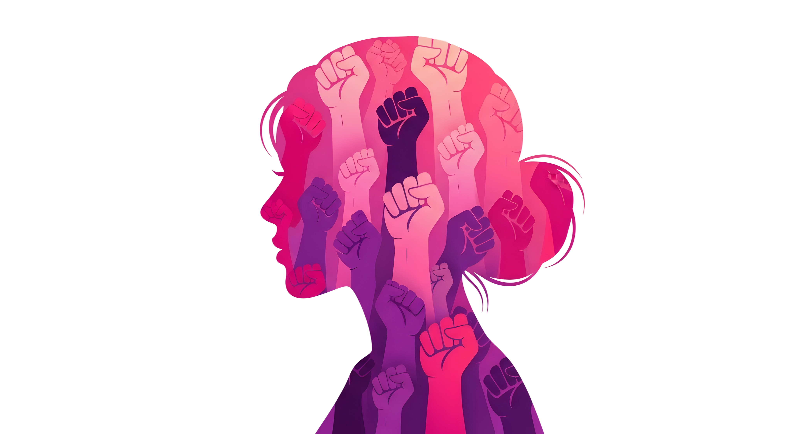

Giving schoolgirls the confidence and skills to find their place in tech — through hands-on workshops at SAP and directly in schools.
Tech. Confidence. Future. ← Back to Work at SAP
The Trainees Women's Network (TWN) is a SAP initiative dedicated to bringing more women into the tech industry. Workshop4Girls is the sub-project I lead within TWN, designed to give schoolgirls a real, hands-on experience of what a career in tech looks and feels like.
We offer free workshops for girls from year 9 onwards, covering technical topics such as programming and AI, as well as methodical skills like Design Thinking and Rhetoric. Groups of up to 25 participants visit SAP, or we bring the workshops directly to their schools.
The goal is not just to teach skills. It's to show girls that tech is for them too.
Leading the Workshop4Girls sub-project within TWN, overseeing its planning, coordination, and execution from start to finish.
Serving as the first point of contact for schools, handling requests, answering questions and matching them with suitable workshop formats.
Setting up meetings, coordinating speakers and trainers, and making sure every workshop is planned, confirmed and running smoothly on the day.
From coding to communication, our workshops cover both technical and interpersonal skills, ensuring every participant finds something that inspires her.
We meet girls where they are by inviting them to SAP's campus or bringing the workshops directly to their schools.
Schools visit SAP's campus, giving participants a first-hand look at life inside a global tech company while taking part in on-site workshops. A day at SAP can change how a student sees her future.
On-site · SAP Campus · Real EnvironmentOur trainers and volunteers travel directly to schools, bringing the workshops to the girls wherever they are. Making participation easy and creating a lasting impact.
Outreach · Schools · Low BarrierWhat leading this project taught me.
Workshop4Girls pushed me beyond design into genuine project management and stakeholder communication. Coordinating between schools, speakers and SAP teams while ensuring a meaningful experience for every participant taught me to lead with clarity, adapt quickly and always keep the people I'm working for at the center.